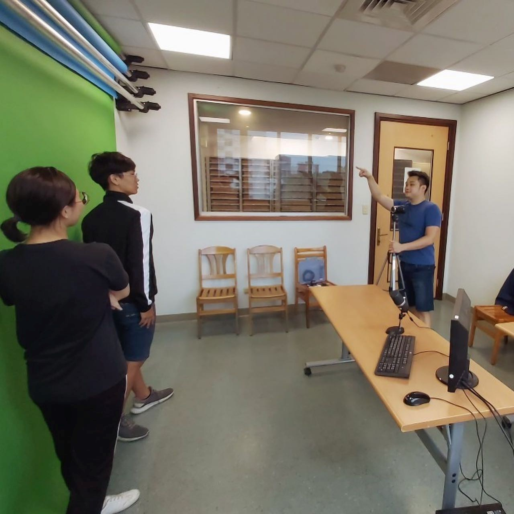

校內教學資源
[圖書館]
本校於民國50年在台復校後，陸續設有人文科學圖書館、社會科學圖書館、自然科學暨外語民生圖書館、醫學圖書室。民國91年8月正式整合為輔仁大學圖書館，下設採訪編目組、閱覽典藏組、期刊媒體組、參考資訊組等四組，目前有濟時樓圖書總館、公博樓圖書分館、國璽樓圖書分館。
| 說明 | 圖片 |
|---|---|

|
簡易攝影棚： 濟時樓圖書館四樓JS409的「簡易攝影棚」提供綠、藍二色的Key板，濟時樓圖書館四樓JS409的「簡易攝影棚」提供綠、藍二色的Key板，可直接在前面拍攝完成後，將背景替換成其他的影片或靜態影像。 查看連結 |
|
簡易攝影棚： 濟時樓圖書館八樓JS812「簡易攝影棚」提供綠幕和多媒體電視螢幕，濟時樓圖書館八樓JS812「簡易攝影棚」提供綠幕和多媒體電視螢幕，可自行準備拍攝器材在此進行課程拍攝。 |
|
媒體製作室： 濟時樓圖書館二樓寫作中心設置了四間媒體製作室，讓師生可以利用這裡所提供的電腦硬體設備 (含雙螢幕)、校園版合法授權之多媒體軟體及影音特效素材製作影片。圖書館在濟時樓圖書館二樓寫作中心設置了四間媒體製作室，讓師生可以利用這裡所提供的電腦硬體設備 (含雙螢幕)、校園版合法授權之多媒體軟體及影音特效素材製作影片。 查看連結 |
|
媒體製作室： 圖書館在濟時樓圖書館八樓也設置了一間媒體製作室，提供電腦、補光燈、收音麥克風、和網路攝影機等設備，適合教師個人進行同步教學或錄製線上教材。 |
[外語教學與數位學習資源中心]
「外語教學資源中心」位於聖言樓九樓，是由外語學院語言實習所（1963年成立）逐步發展擴充而來，並於1997年正式更名為「外語教學資源中心」，主要負責外語、理工、民生學院的語言聽講教學、視聽器材及各類型媒體教學教材的管理。106年組織改隸教務處並更名為「外語教學資源與自學中心」步入多媒體、語言學習、數位自主學習新時代，致力推展新教學科技之應用，109年為符合校方賦予之任務與發展現況，更名為「外語教學與數位學習資源中心」。
外語教學資源中心設有下列支援全校教學使用之空間設備：
| 說明 | 圖片 |
|---|---|
虛擬攝影棚： 設置4K攝影機、4K HD錄影機、專業讀稿機、數位影像剪輯系統及TriCaster Mini主機系統，提供虛擬場景及現場導播系統，以支援串流媒體、錄製所需。 |
|
|
數位錄音室： 設有數位混音平台、專業錄音編輯系統、廣播級麥克風等可製作數位音檔之設備，專門針對錄製談話式語言教學、實習戲劇配音等人聲需求而設計。 |
|
教材製作室： 配置教師自行製作教學教材所需之設備，並提供老師自製網路多媒體教材的工具與技術。 |
|
遠距視訊教室： 設有遠距教室4間及小型視聽討論室1間，透過Microsoft Teams、Cisco Webex、Google Meet等視訊軟體，結合手機、平板、電腦等行動裝置進行同步數位課程，並支援視訊面試、跨國口試、研討會等國內、外視訊會議。 |
[媒體與教學資源中心]
「媒體與教學資源中心」的前身是「大眾傳播學系器材室」(1991年設立) ，由傳播系所規劃建置，目的在提供完善的媒體製作環境與設備。 媒體中心之定位為製作取向與專業導向，故其服務主要以支援傳播系所之專業教學為優先，但校內其他單位若有媒體製作方面之需求，亦可透過「教師發展與教學資源中心」之服務窗口聯絡，由媒體中心提供專業之諮詢與支援。
| 說明 | 圖片 |
|---|---|
電視攝影棚： 本中心電視攝影棚設備包括數位攝影機及各式燈光、腳架、麥克風、 供老師於棚內錄製動態教材。有需要使用的老師，可填寫相關表格，完成簽核等程序並經審核後，即可使用。 |
|
|
廣播錄音室： 本中心設有錄音間2間，配製數位錄音軟體與收音設備，教師可提交申請單，經核可後，中心安排人力使用錄音室協助教師錄製教材、口譯等教學音檔。 |
|
錄播系統及教室： 本中心備有錄播系統一套的專業教室，供老師做及時錄製課堂內容或教室活動歷程並上傳至教學平台中，另若課程中如遇技術問題，中心亦有專責人員協助處理。 |
[資訊中心教學資源組]
「資訊中心教學資源組位於聖言樓四樓 406 室。教學支援組(簡稱教學組)，主要業務在於支援上課使用電腦教學與學生課後自由上機實習的環境，並將資源整合管理，使空間、軟硬體能有效且方便的利用。此外，資訊中心教學組對於全校性有關教學性的業務亦多有支援，諸如：提供全校性的教育訓練、調查採購全校性的共用軟體等，並支援資訊技術諮詢服務。期能提昇教職員生的電腦技能。